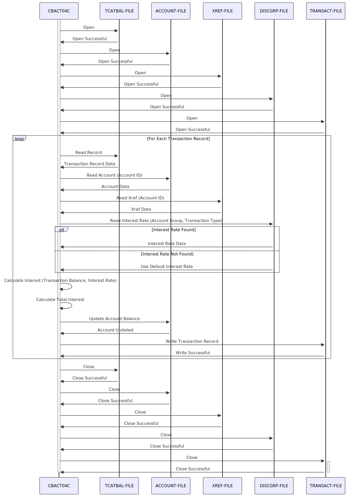

Gerado em: 1º de outubro de 2024
Título do Documento: CardDemo - Programa de Processamento em Lote para Cálculo de Juros
Descrição Resumida: Este programa calcula e aplica juros mensais às contas de cartão de crédito dos clientes com base no histórico de transações e taxas de juros predefinidas. Os juros calculados são então atualizados no saldo da conta e um registro da transação é gerado.
Histórias do Usuário:
Como analista de dados financeiros, preciso garantir que as contas dos clientes sejam cobradas com os juros corretos a cada mês, para que possamos manter registros financeiros precisos.
Epic Relacionado: 7 - Processamento em Lote
Requisitos Funcionais:
- Ler Dados da Transação: Ler e processar os detalhes da transação de cada cliente do Arquivo de Saldo da Categoria da Transação (
TCATBAL-FILE).
- Recuperar Informações da Conta: Para cada transação, buscar as informações da conta do cliente correspondente no Arquivo Mestre da Conta (
ACCOUNT-FILE) usando o ID da Conta.
- Determinar a Taxa de Juros: Identificar a taxa de juros aplicável com base no grupo da conta do cliente e na categoria da transação no Arquivo do Grupo de Divulgação (
DISCGRP-FILE).
- Regra de Negócio: Se a taxa de juros de um grupo de divulgação específico não for encontrada, o sistema deverá usar a taxa de juros padrão associada ao código de grupo ‘DEFAULT’.
- Calcular Juros: Calcular os juros mensais para cada categoria de transação:
- Regra de Negócio: Divida o produto do saldo da categoria da transação pela taxa de juros anual correspondente por 1200 (representando 12 meses).
- Atualizar Saldo da Conta: Atualizar o saldo da conta do cliente no Arquivo Mestre da Conta (
ACCOUNT-FILE) adicionando o total de juros calculado.
- Gerar Registro de Transação: Criar um registro de transação para cada aplicação de juros, detalhando o ID da transação, valor, data e hora e detalhes relevantes. Gravar este registro no Arquivo de Transações (
TRANSACT-FILE).
- Fechar Arquivos: Fechar adequadamente todos os arquivos de entrada e saída (
TCATBAL-FILE, ACCOUNT-FILE, DISCGRP-FILE, TRANSACT-FILE) para garantir a integridade dos dados.
Requisitos Não Funcionais:
- Desempenho: O programa deve processar grandes volumes de dados de transações de forma eficiente dentro de um prazo razoável.
- Confiabilidade: O programa deve operar de forma confiável sem erros, garantindo cálculos precisos de juros e atualizações nos saldos das contas.
- Manutenibilidade: O código do programa deve ser bem estruturado, documentado e fácil de entender para futuras manutenções e aprimoramentos.
- Segurança:
- O programa deve ser executado em um ambiente seguro com controles de acesso adequados para evitar o acesso não autorizado a dados financeiros confidenciais.
- Todas as operações de arquivo (leitura, gravação, atualização) devem ser registradas para fins de auditoria.
Critérios de Aceitação:
- O programa lê e processa com sucesso todos os registros de transações do cliente do arquivo de entrada.
- O cálculo de juros para cada transação está correto, aderindo às regras de negócio definidas.
- Os saldos das contas do cliente no Arquivo Mestre da Conta são atualizados corretamente com os juros calculados.
- Um registro de transação para cada aplicação de juros é gerado e gravado no Arquivo de Transações.
- O programa lida com erros de arquivo normalmente, registrando quaisquer problemas encontrados durante o processamento.
- A execução do programa é concluída dentro de um prazo aceitável.
Melhorias de Código:
- Tratamento de Erros: Implementar um mecanismo de tratamento de erros centralizado e consistente para gerenciar exceções normalmente, registrar erros e potencialmente permitir recuperação ou notificação.
- Log: Aprimorar o registro para capturar informações mais detalhadas sobre a execução do programa, incluindo o número de registros processados, taxas de juros aplicadas e quaisquer erros encontrados. Isso ajudará na depuração e monitoramento do desempenho do programa.
- Modularidade: Dividir o programa em módulos ou sub-rotinas menores e mais gerenciáveis para melhorar a legibilidade do código, a capacidade de manutenção e a potencial reutilização do código.
- Parametrização: Permitir que parâmetros de configuração sejam passados para o programa, como caminhos de arquivo, taxas de juros ou outras variáveis, para aumentar a flexibilidade e reduzir a necessidade de alterações no código.
Melhorias de Segurança:
- Controle de Acesso: Garantir que apenas pessoal ou sistemas autorizados tenham acesso para executar o programa em lote e acessar os arquivos de dados confidenciais.
- Criptografia de Dados: Considerar a criptografia de dados em repouso (nos arquivos de dados) e em trânsito (durante o processamento de arquivos) para proteger contra acesso não autorizado.
- Trilhas de Auditoria: Implementar trilhas de auditoria abrangentes para rastrear todos os acessos a arquivos, modificações de dados e execuções de programas para fins de segurança e conformidade.
Diagrama Conceitual:

–Made by “Smart Engineering” (by Compass.UOL)–